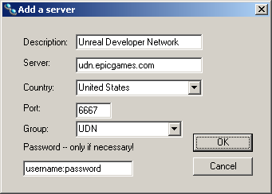
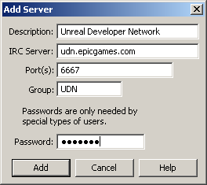

UDN
Search public documentation:
UnDevIRCJP
English Translation
한국어
Interested in the Unreal Engine?
Visit the Unreal Technology site.
Looking for jobs and company info?
Check out the Epic games site.
Questions about support via UDN?
Contact the UDN Staff
한국어
Interested in the Unreal Engine?
Visit the Unreal Technology site.
Looking for jobs and company info?
Check out the Epic games site.
Questions about support via UDN?
Contact the UDN Staff
#UnDev IRC チャンネル
Ron Prestenback により最終更新（正確なURLでの画面キャプチャーの更新）。原作者はVito Miliano （Udnスタッフ?）リアルタイム ディスカッション
少々個人的なアシスタンスが必要な場合は、ライセンス所有者間で比較的に安全な環境下でチャットができるよう、個人のIRC（インターネット リレーチャット）サーバーがメンテナンスされています。IRCについての情報は、 http://www.irchelp.org/ をご覧ください。 注意:#UnDev では UnrealEngine3 の質問は受け付けて おりません。
UDN IRCサーバーのためのURLおよびチャンネルは:
irc://udn.epicgames.com:6667/UnDev,needpass
IRCクライアントに接続するとパスワードの入力が必要になります（これが=needpass= により指定されます）。udn ユーザー名、udn パスワードをパスワードとして使用してください。パスワード入力のプロンプトがない場合は、ご使用のブラウザ、IRCクライアント、またはその両方が、ドラフトURLの規則をサポートしていない恐れがあります。
その場合には、IRCクライアントを以下に接続するようセットします:
- Server （サーバー）: udn.epicgames.com
- Port （ポート）: 6667
- Password （パスワード）: your-udn-username:your-udn-password
- Channel （チャンネル）: #UnDev
/server udn.epicgames.com 6667 your-udn-username:your-udn-password"No identd detected"（「個人情報が検出されませんでした」）"Hostname not found"（「ホスト名が見つかりません」）などのメッセージが表示されます。これらは特に長時間の遅れの後に表示されますが、ごく一般のIRCメッセージです。しばらく後に承認されます。もし入れない場合は（"No authorization"（「承認不可」））ユーザー名およびパスワードが正しく入力されているか確かめてください。IRCクライアントに再度接続する必要がある場合があります。接続したら、次にこれを実行します:
/join #UnDevチャンネルに入ったら、自分の紹介をします。その他の人々について知りたい場合、次の操作をします :
/whois nickname
nickname （ニックネーム）が、あなたの知りたい人のニックネームです。IRCサーバーは、指定された個人の情報を返しますが。少なくともチームや会社の情報が得られます。
TrillianにUDN IRCサーバーを追加
注意: Trillian 3 は当社のサーバーでは作動しません。パスワードフィールドにはコロン「:」を使用できません。 Trillian 2をご使用ください: [Connection Manager]（接続マネージャ）を開き、[Chat Medium]（チャット ミディアム）のドロップダウン メニューから"IRC"を選択します。[Add]（追加）ボタンをクリックし、次の値を入力します：
ユーザー名およびパスワードを、udnユーザー名 : udnパスワードで置き換えてください。これは必要な操作です。Trillian 0.725からは、スタートアップで複数のIRCサーバーに自動的に接続することはできません。mIRCにUDN IRCサーバーを追加
[File]（ファイル）、[Options]（オプション）をクリックし、[Connect]（接続）を選んでください。次に"Add"（追加）をクリックし、次の値を入力してください :
あなたのudnユーザー名 : udnパスワードを、パスワードの箇所に入力してください。あなたは特別なユーザーです。